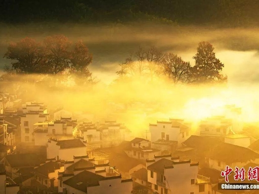
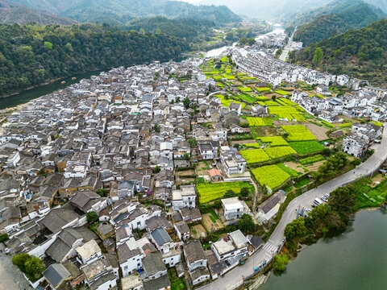
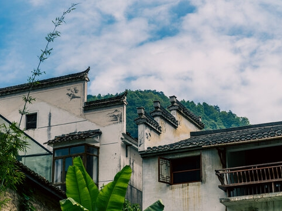
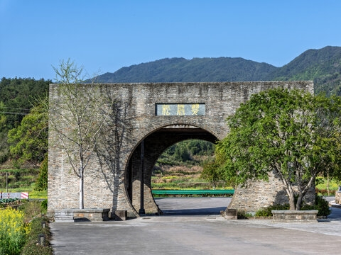
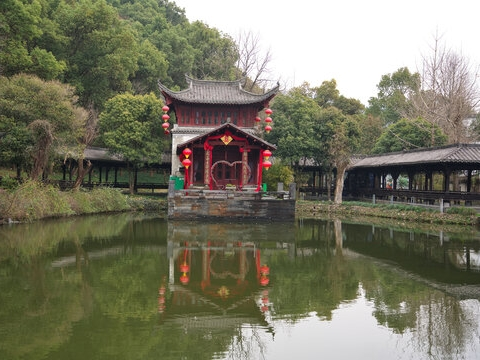

白墙黛瓦、飞檐马头墙是上饶婺源最鲜明的地域符号。作为徽文化重要传承地，当地古村落依山傍水而建，砖木雕刻工艺精湛，门窗、梁枋上布满花鸟、人物纹样。千年以来，徽派建筑与山水相融，承载着赣东北传统人居智慧，也是上饶地域民俗、建筑文化的活态载体，尽显江南古韵。
弋阳腔被誉为“戏曲活化石”，发源于上饶弋阳，是国家级非物质文化遗产。唱腔高亢粗犷、一唱众和，不用管弦伴奏，仅以锣鼓相和。数百年来扎根民间，融合地方方言与民俗，逢节庆、庙会登台演出，是上饶本土戏曲文化的代表。
连四纸产自上饶铅山，是国家级非遗手工造纸技艺。以嫩竹为原料，经上百道纯手工工序制成，纸张洁白柔韧、防虫耐存，自古便是书画、典籍专用纸。这项古老技艺传承千年，工序繁复且全凭匠人经验，是上饶传统手工业文化的瑰宝。
上饶部分山区聚居畲族，形成独特的少数民族地域文化。畲民擅长山歌、传统舞蹈与手工刺绣，服饰色彩艳丽、纹样精美。每逢传统节日，村民会举办对歌、祭祖、民俗表演等活动，畲族文化与汉族民俗交融共生。
广丰木雕是上饶传统民间工艺，选材考究、刀法细腻，分为建筑雕饰、摆件、家具雕刻等类别。作品题材多取自吉祥图案、山水人物、民间故事，构图精巧、栩栩如生。这项技艺世代相传，广泛用于古建修缮。
晒秋是上饶婺源流传数百年的农耕民俗文化。每到秋季，村民将辣椒、玉米、南瓜、稻谷等农作物晾晒在晒楼、晒匾之上，五彩斑斓的作物铺满村落。这不仅是秋收劳作场景，更是顺应自然的乡土习俗，勾勒出浓郁的田园烟火气。